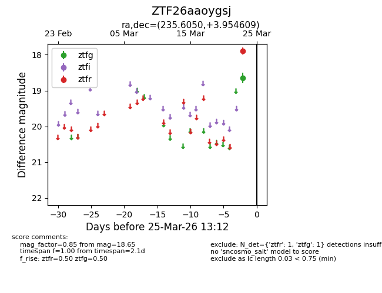
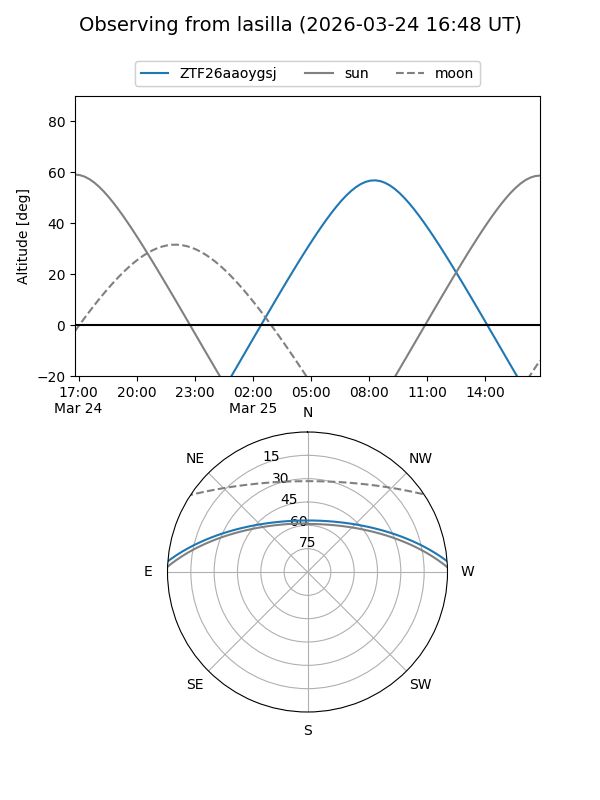
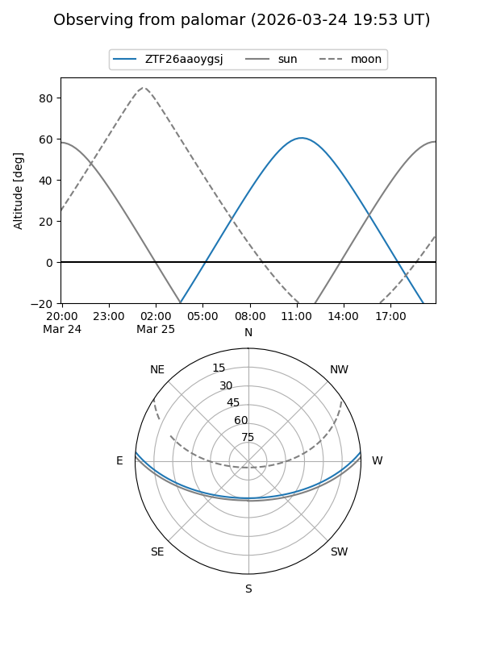

ZTF26aaoygsj
Target ZTF26aaoygsj at 2026-03-25 13:14
Aliases and brokers:
FINK: link
Lasair: link
ALeRCE: link
alt names
ZTF26aaoygsj (ztf,fink_ztf)
Coordinates:
equatorial (ra, dec) = 235.6050,+3.95461
equatorial (HMS+DMS) = 15:42:25.21,+03:57:16.59
galactic (l, b) = (10.9967,+43.11591)
Flags:
Photometry:
last ztfg=18.65, ztfr=17.90
1 ztfg, 1 ztfr detections
Lightcurve

Visibility


Additional plots